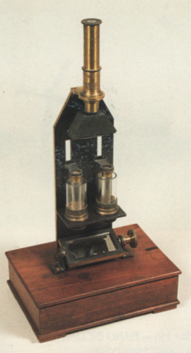

Colorimetro di Dubosq
Scuola di provenienza: Istituto Agrario "F. De Sanctis", Avellino
Costruttori: Nessuno
Materiali: Ottone, vetro, legno di mogano, ferro
Accessori: Nessuno
Stato di conservazione: Buono
Descrizione: È atto alla determinazione delle concentrazioni relative di soluzioni diluite di una sostanza colorata. Dispositivi di questo tipo sono impropriamente denominati colorimetri, effettivamente sono dei misuratori d’assorbimento. In questi apparecchi l’occhio esamina la brillantezza di due campi fotometrici adiacenti, illuminati dalla stessa sorgente